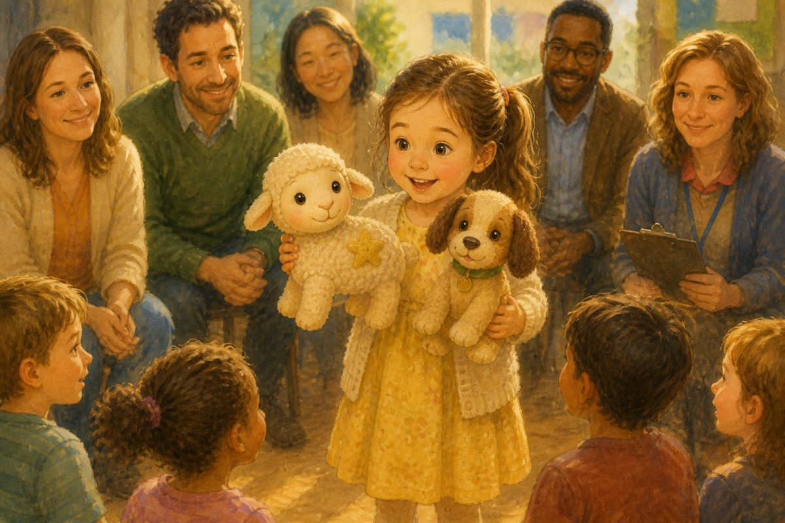

Star and the Midnight FeastA Star of the Toy Farm story
From a kid, to a kid
A Star of the Toy Farm story. Best after Star Finds a Home, but written so new readers can catch up.
A sleepover, a show-and-tell prize, a riddle-loving goat, and a midnight feast — Star learns that bravery isn’t only mountains. It’s looking after friends when the night gets messy.
Main characters
12 chapters · sample of 1–2
- After the Mountain
- Show and Tell
- Barney the Riddle Goat
- The Vacuum Strikes
- Invited!
- Meet Avril
- Rules of the Night
- Midnight Feast
- Morning Mess
- The Monster Bath
- What Leaders Do
- Tips from Star (and Goodnight)
After the Mountain
If you are just meeting me: my name is Star. I am a toy sheep. I used to live on a shop shelf and wonder why I existed. Then I became Sophia’s birthday gift, found Bundle the dog, helped bring Mia the cow home, and climbed a hill in a backpack.
Now ordinary mornings felt… small.
“Leaders still have jobs,” Bundle reminded me, pacing the hay like a tiny security guard. “Keep the farm safe. Keep the secret. Only Sophia hears us — and only when Mum and Dad aren’t listening.”
Mia stretched. “Small mornings are when the next adventure sneaks up,” she said.
She was right.
Show and Tell
Sophia was excited to tell everyone at school what had happened — carefully, of course.
“Remember — you’ve got to act like toys,” she warned Bundle and me. “Be still. Don’t move. There will be parents and teachers!”
“I really want to get a prize!” she added.
We spent the morning practising being perfectly still. Bundle’s ear twitched once. I almost giggled. Sophia glared. We froze harder.

At the hall, parents and teachers assembled. Sophia was the first to go. She talked about her toy farm, but she didn’t tell them we could talk. “Since you love toys so much…” said the announcer — and she did get praise!
Best of all, she whispered on the way home, “There’s a new friend coming to the farm. A goat. His name is Barney.”
Continue on Amazon
This is a free Look Inside — the cover, the chapter list, and the first two chapters. The rest of Star and the Midnight Feast is on Amazon Kindle.